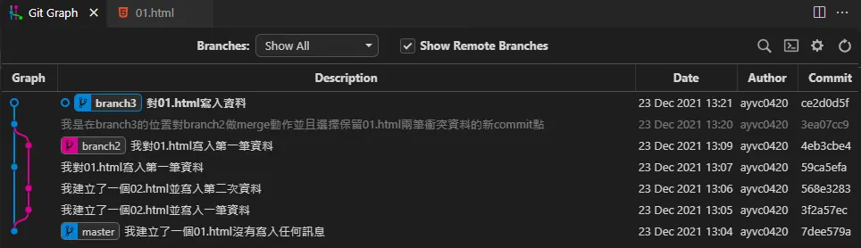
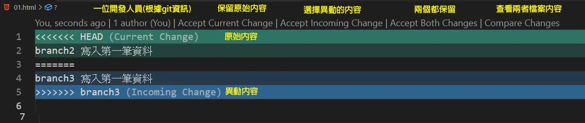
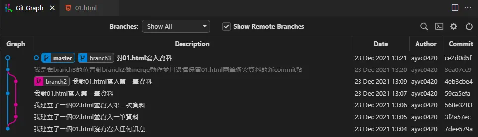
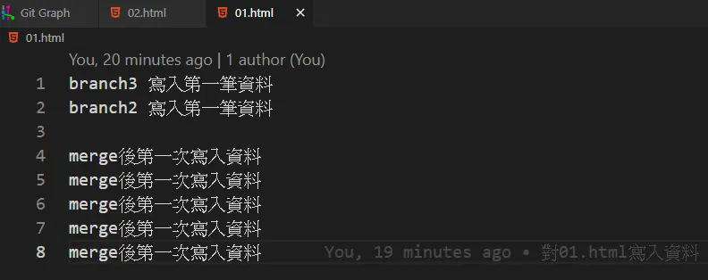
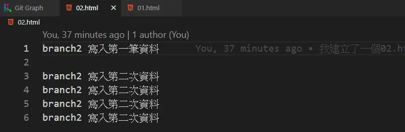

前言
Git是一種版本控制系統，傳統確保專案開發時可以回到上一個存檔點記錄點時，會使用copy的方式將整個專案資料夾進行複製，但經過多次的修改資料夾越來越多且命名繁雜，因此2005年Linus Benedict Torvalds以GUN條款釋出Git，最初為作者為了更好管理Linux核心而設計出現已經是全球大小專案皆會使用。
Git介紹
- 團隊專案開發
- 個人專案開發
- 平時自行開發/測試項目
- 需要軟體追蹤檔案更改紀錄的開發者
有哪些開發者會使用Git?
- 可以自由切換任一時間的紀錄點
- 指令不出錯情況下不會丟失任何檔案
- 可以找出每行程式碼是出自哪位工程師的手(找戰犯專用)
- 擁有遠端倉庫的情況下就算整台電腦掛掉也能輕鬆復原專案
- 比起copy保存檔案的方式更節省空間使用率
- 可以快速建立一套初始化專案設定
- 免費、開源
使用Git的優點
- 需要額外花費時間學習Git的指令
- 雖然入門門檻低但需要精通Git的指令非常困難
使用Git的缺點
Git的流程
Git分為工作區、暫存區、儲存區，平時開發會在工作區執行，將檔案進行記錄點儲存時需要先將檔案放入暫存區(git add)，執行儲存時會將整個暫存區的檔案進行紀錄附上自訂訊息(git commit)，一般流程可以參考:
開發告一段落或需要紀錄儲存點時將檔案加入追蹤(git add) 針對已追蹤的檔案進行訊息紀錄(git commit) 將檔案推送至遠端倉庫保存(git push)，此選項不一定會使用
應該要如何使用Git
使用Windows作業系統須至Git官網安裝Git套件，Linux以及Mac系統已經內建Git套件在終端機可以直接輸入git相關指令安裝，或參考Git基礎使用介紹。
使用Git前必須先對資料夾建立Git初始化，將資料夾用vs code開啟後在終端機執行git init指令即可讓Git對這個資料夾進行監控。
本篇不針對建立使用者資訊做介紹，詳細請參考六角-Git設定個人資訊、Git使用者設定教學
以下內容使用環境為Windows平台vs code編輯器、Git GUI圖形介面工具Git Graph。
Git常見指令
- git init
- git branch
- git branch name
- git branch -d name
- git checkout name
- git checkout -b name
- git add fileName.txt
- git add .
- git status
- git commit -m "msg"
- git commit --amend -m "newMsg"
- git reflog
- git tag v0.1
- git merge targetName
- git rebase
- git reset commit的SHA-1碼(最低輸入4碼以上，建議輸入6碼)
- git reset --hard HEAD^
- git reset --hard HEAD~5
在終端機當前的位置建立Git設定
查看現有分支
新增name分支，如果存在會報錯
刪除name分支，如果不存在會報錯
切換至name分支，填入tag標籤時也可切換至tag標籤記錄點
切換至name分支，如果不存在會目前位置自動新增
將fileName.txt當下狀態加入追蹤，追蹤後修改儲存並檔案需要再次追蹤
將終端機所在位置底下的所有項目進行追蹤
顯示整個git工作區尚未追蹤的檔案
將已追蹤的項目加上msg後提交存為記錄點
將最後一個commit點的訊息變更為newMsg訊息
顯示最近git的指令，包含SHA-1碼、分支操作，用於拯救reset錯誤動作
將當前所在位置設置一個標籤，標籤紀錄為v0.1，如果要針對commit等對象加入標籤需使用HEAD分離狀態切換，tag建議使用GUI工具
將目前所在分支與targetName分支進行融合，融合後會創立一個新的commit點，如果同一支檔案內容有衝突需手動排除
合併分支，與merge不同的是rebase會將目前這個分支的紀錄點融合至對象分支，當有衝突時與merge一樣需排查，完畢後使用git rebase --continue完成rebase動作，反悔輸入--abort
回到對應SHA-1碼的記錄點，操作失誤且丟失當前SHA-1碼時使用git reflog救回
把當前分支的動作回到上一步，注意是當前分支不是全部操作
把當前分支的動作回到上五步，注意是當前分支不是全部操作
以上是比較基本的Git指令，其中每個指令後面皆有許多參數，有點複雜嗎?那就實際動作操作看看吧!
以下是使用add checkout commit merge基本指令的Git GUI圖型
{kind=link}
其中，當我執行merge動作時同一個檔案內有不同分支寫進的紀錄會導致檔案衝突需要人工排除。
{kind=link}
如圖所示，這邊我們選擇Accept Both Changes都保留，須注意具體程式碼行數可能會被有所移動需要重新確認。
最後切換至master分支對branch3做merge動作後就會變成這樣。
{kind=link}
最終在master的時候 01.html檔案內容。
{kind=link}
最終在master的時候 02.html檔案內容。
{kind=link}